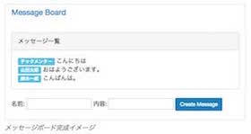
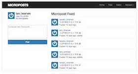
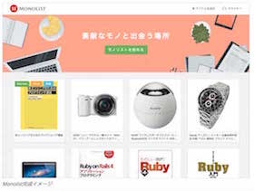
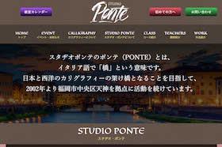

Work1
メッセージボード（仮称）
Ruby on Railsを用いて最初に作成するアプリケーション。メッセージボードは、名前と内容を入力して送信すると、用意されたボードにメッセージが書き込まれる単純なWebアプリです。
Work2
Twitterクローン（仮称）
メッセージボードの次に作成するアプリケーション。基本的な機能として、次の実装を行う。
- ユーザーが新規登録・ログインできる
- つぶやき（マイクロポスト）を投稿できる
- 他のユーザーをフォローして、タイムラインを表示できる
Work3
仮想サイト「モノリスト」（仮称）
楽天の楽天ウェブサービスを用いて楽天市場の商品を検索し、自分が持っているもの・欲しい物を共有する仮想サイト「モノリスト」。ユーザーはモノリストから楽天の商品をAPI経由で検索し、持っている「Have」ボタン・欲しい「Want」ボタンを押下することにより、自分のコレクションとして保存することができます。また、他のユーザーが持っているものなどにも「Have」ボタン・「Want」ボタンが付いており、他のユーザーのアイテムも自分のコレクションに追加できます。
Work4
オリジナルサービス（仮称）
オリジナルサービス・・・・・